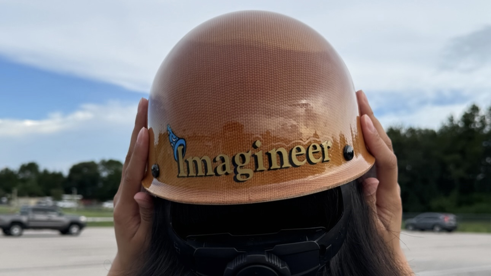

Senior Capstone Project - Dolphin Enrichment Device. Client facing project, full electro-mechanical design cycle from problem definition to verification

As a Show Mechanical Intern, I had the chance to really see how the magic is made at Disney World. During the 9 weeks I spent with Disney, I learned from many engineers and experts on animatronics and even got the opportunity to aid in the preperation of the opening of a brand new ride. Worked 3rd shift to learn about what it actually takes to get a ride ready for opening day was an exciting experience. I spent most of my time working on my intern project, but really enjoyed being able to take part in activities such as Lunch &Learns and Speaker Panels.
I had been given the artistic concept design of an anamatronic character, the desired type of motion, and the ranges of motion necessary. There were three desired types of motion, but I was only given two motors due to the size of the animatronic. The design would have to be able to achieve all three desired ranges of motion, be contained within the constraints of the creative shell, and be validated as a feasible design through Finite Element Analysis (FEA). Due to the timing of my internship, I worked on this design up until 30% design review.
I created a 3D model of the the mechanical design in Solidworks. During the design process, I utilized iterative design and ended the summer with over 60 iterations of the design. To ensure that the motors given would work with the loads I had designed, I conducted motor studies. Validating the torque and speed constraints was critical to the function of the animatronic. I ran simulations within KineSim to validate the mechanical designs full functionality. Additionally, I selected animatronic bearings utilizing Grubler’s Formula, used company libraries to choose fasteners, studied properties of potential materials to determine necessary weight, stiffness, and strength
To prepare for the 30% design review, I performed Rigid Body Dynamics (RBD) analysis to analyze the movement and Finite Element Analysis (FEA) using SolidWorks to ensure functionality at worst-case scenario for motor torque and hard stop stress analysis. While the timing of my internship didn’t allow me to participate in the formal 30% design review, I presented my progress and design to my team.
Senior Capstone Project - Dolphin Enrichment Device. Client facing project, full electro-mechanical design cycle from problem definition to verification

Imagineering Internship Project Animatronic design, from concept to 30% design review. Solidworks modeling.

Bottle Rocket developing a reusable rocket that can land in a predetermined location and creating an emperical model in Matlab to predict the launch
I am currently open to work and would love to hear about any opportunities. Please do not hesitate to reach out!